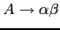
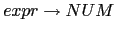
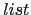
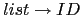
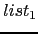

Se admite que
, donde  denota la palabra vacía, esto es
la palabra que tiene longitud cero, formada por cero símbolos del conjunto base
denota la palabra vacía, esto es
la palabra que tiene longitud cero, formada por cero símbolos del conjunto base  .
.
Esto es, el lenguaje generado por la gramática  esta formado por las cadenas
de terminales que pueden ser derivados desde el símbolo de arranque.
esta formado por las cadenas
de terminales que pueden ser derivados desde el símbolo de arranque.
Una derivación
en la cual en cada paso
 la regla de producción aplicada
la regla de producción aplicada
 se aplica en la variable sintáctica mas a la derecha se dice una derivación a derechas
se aplica en la variable sintáctica mas a la derecha se dice una derivación a derechas
Una derivación
en la cual en cada paso
la regla de producción aplicada
 se aplica en la variable sintáctica mas a la izquierda se dice una derivación a izquierdas
se aplica en la variable sintáctica mas a la izquierda se dice una derivación a izquierdas
Los fragmentos de código asi insertados se denominan acciones semánticas.
En un esquema de traducción los nodos del árbol sintáctico tienen asociados atributos. Si pensamos que cada nodo del árbol es un objeto, entonces los atributos del nodo son los atributos del objeto. Las reglas semánticas determinan la forma en la que son evaluados los atributos.
Los fragmentos de código de un esquema de traducción calculan y modifican los atributos asociados con los nodos del árbol sintáctico. El orden en que se evalúan los fragmentos es el de un recorrido primero-profundo del árbol de análisis sintáctico. Esto significa que si en la regla  insertamos un fragmento de código:
La acción
 se ejecutará después de todas las acciones
asociadas con el recorrido del subárbol de
se ejecutará después de todas las acciones
asociadas con el recorrido del subárbol de  y antes que todas
las acciones asociadas con el recorrido del subárbol
y antes que todas
las acciones asociadas con el recorrido del subárbol  .
.
Obsérvese que para poder aplicar un esquema de traducción hay que - al menos conceptualmente - construir el árbol sintáctico y después aplicar las acciones empotradas en las reglas en el orden de recorrido primero-profundo. Por supuesto, si la gramática es ambigua una frase podría tener dos árboles y la ejecución de las acciones para ellos podría dar lugar a diferentes resultados. Si se quiere evitar la multiplicidad de resultados (interpretaciones semánticas) es necesario precisar de que árbol sintáctico concreto se esta hablando.
El siguiente esquema de traducción recibe como entrada una expresión en infijo y produce como salida su traducción a postfijo para expresiones aritmeticas con sólo restas de números:
|
|
{ $expr{TRA} = $expr[1]{TRA}." ".$NUM{VAL}." - "} |
|  | { $expr{TRA} = $NUM{VAL} } |
Que para una entrada 2 - 3 - 7 daría lugar a la siguiente evaluación:
e '2 3 - 7 -'
`-- --- e '2 3 -'
| `------ e '2'
| | `-- N 2
| |-- '-'
| `-- N 3
|-- '-'
`-- N 7
{ $list{T} = $type{T} } 
|
|
{ $type{T} = $int } |
|
{ $type{T} = $string } |
|

, { $ID{T} = $list{T}; $list_1{T} = $list{T} } 
|
|
{ $ID{T} = $list{T} }
|